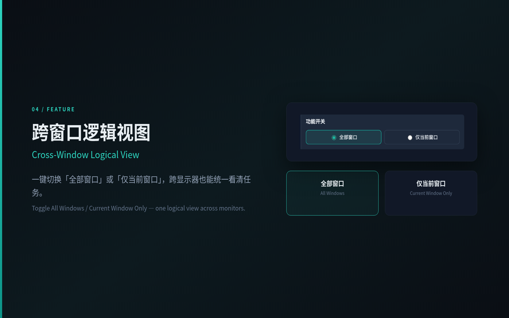

精确 URL 去重
任一窗口已有相同 URL 时，跳到已有标签并关掉重复页。默认把 hash 算进匹配；也可在设置里忽略。
精确 URL 去重（跨窗口跳转），再加上可学习的任务导航图。只用侧边栏。模型顺序：设备端 Nano → 你自己的 OpenAI 兼容接口 → 本地启发式。
已在 Chrome 网上应用店上架（v1.5.0，2026-11-05）。从源码加载已解压扩展仍留给开发者。
功能
给使用者看的能力，而不是实现细节。
任一窗口已有相同 URL 时，跳到已有标签并关掉重复页。默认把 hash 算进匹配；也可在设置里忽略。
规则只出候选（真实来源 / 引用页、项目路径）；模型根据标题 + URL + 短摘要判断是否同一任务。同窗口或开页时间相近不会硬合并。
点击工具栏图标，或按 Ctrl+Shift+K / ⌘⇧K。没有工具栏弹窗。
语言、Nano、自定义模型和开关都在齿轮后面 — 任务列表保持主界面。
全部窗口或仅当前窗口 — 多显示器也是同一套逻辑视图。选择会记住。
把任务或标签拖到另一组上即可合并，再拆回去，或关掉整个逻辑组。
默认跟随浏览器，也可在设置里锁定中文或 English。
优先设备端 Gemini Nano。否则用你填写的 OpenAI 兼容 Base URL。再否则走启发式 — 导航图照样工作。不附带厂商后台。
模型
命名和混杂簇精炼才走模型；分组主路径仍是导航图。
Chrome Prompt API LanguageModel。若模型可下载，到设置里点 下载 / 启用 Nano（需要用户手势）。
Base URL、API key 和模型名保存在 chrome.storage.sync。请求只发往你填写的地址。
标题 + 短摘要关键词。页面正文不会离开这台设备。
安装
能走商店就走商店。加载已解压扩展 / 源码 ZIP 只给开发者，或用不了商店的环境。
公开发布版本 v1.5.0（商店更新日期 2026-11-05）。
从 Chrome 网上应用店安装从包含 manifest.json 的仓库根目录加载已解压的扩展程序。
chrome://extensions。manifest.json 的那个文件夹（你克隆下来的目录，例如 smart-tab-pilot/）。产品
商店用的是真实产品图，不是模拟界面。
